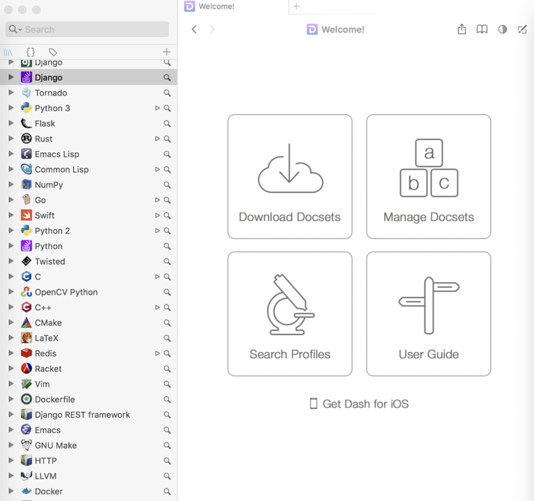
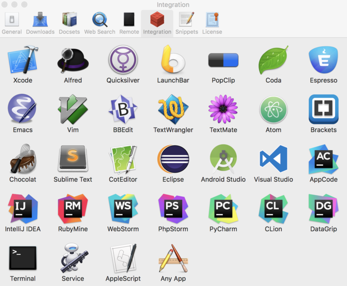

MAC好用软件
这个文章的目的是推荐一些自认为好用软件。好用的标准是什么？好用的标准有 很多，我认为最重要的是能够用着舒服、简化操作而且能够高效的达到我们的目的。下面我就说一下我认为好的软件。
Emacs
为什么第一个推荐Emacs呢？即使你是Vim用户，学习Emacs对你使用Mac也很有用。 为什么这样说呢？我就说说移动的操作。我们都知道Vim移动使用的是H J K L。 这是很快，但是这对你在Mac下没有任何的帮助，你依然要用到方向键，或者鼠 标去做很多的操作。但是Emacs的方向移动却不是这样的，它与Vim是两个完全不 一样的哲学。在Emacs中，我们使用C-a, C-e, C-f, C-b, C-p, C-n等，去做移 动操作。你可以在Mac上随便一个文本编辑工具或者其他需要输入文字的地方去 试一下这几个命令。熟悉了以后你会感到非常的方便，当然Ctrl键要大小写键换 一下才好用。举个例子，在Iterm中我们输入命令，可以很方便的修改，还有写Email等等。 这还只是简单的移动其他还有很多。 每个人的Emacs都是不一样的，也有不同的按键和操作，如果你不想折腾，不建议学。
Dash
作为一个码农，查文档是必不可少的。如何能够快速的查到我们需要的东西，对
我们来说很重要。Dash就是这样一个工具，我们可以提前下载一些相关的文档。
这个软件如果单独使用并不能体现他的优势，因为这样与你在浏览器上搜索相比，
也不见得快多少。很牛的一点是它本身集成了很多的软件，例如Emacs, Vim,
Eclipse, IDEA, Sublime等等。我经常要使用Emacs，在Emacs中有一个命令是
dash-at-point, 他会在Dash中查询光标所在单词相关的文档，非常方便，其他
软件也类似。

下面是集成的软件，非常的多。

另外一个比较有用的地方是它的Snippets也很好用。我们可以将一些很常见的固
定的模式，保存到snippets中。举一个简单的例子。例如我经常要用 python -m
SimpleHTTPServer 8000 去创建一个http server，因为这个很固定，我其实就
可以创建一个snippet来为这行代码创建一个简单的缩写，我用的是 hs; 。我所
有的snippets的缩写我都是以 =;=结尾, 缩写越简单越好。

这个软件是付费的还是比较贵的，但是不付费也是可以使用，只是比较蛋疼，经常要等10秒才能出结果。 如果是上班族，建议购买正版；学生狗的话，你懂得。